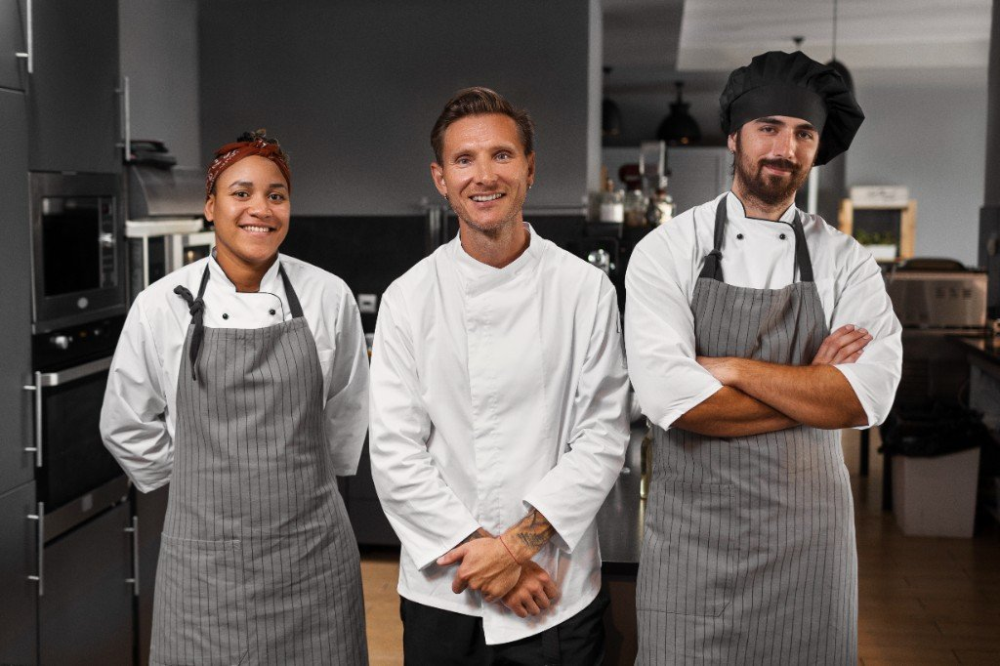

The Burger Bar is a small Durban crew with a big grill. Here are the people behind the smash.
Owners
Amber Smith
Co-owner and brand lead. Amber grew up around Durban food markets and brought that energy to The Burger Bar in 2016. She shapes the menu, monthly specials and the look of the brand at 246 Currie Road.
Abel Khan
Co-owner and head of the grill. Abel is the smash specialist behind every beef and chicken patty. He works with trusted halal suppliers, trains the team on the station and keeps every burger hot and made to order at 246 Currie Road.
Staff

Thando Dlamini
Senior grill cook. Thando runs the smash station during busy service and makes sure every patty hits the bun hot and well seasoned.
Lindiwe Naidoo
Front-of-house and orders. Lindiwe welcomes customers, keeps the sides moving and helps with orders on trading days.
Jason Botha
Prep and sauces. Jason handles bun toasting, house sauces and the topping station so the line stays fast without losing flavour.